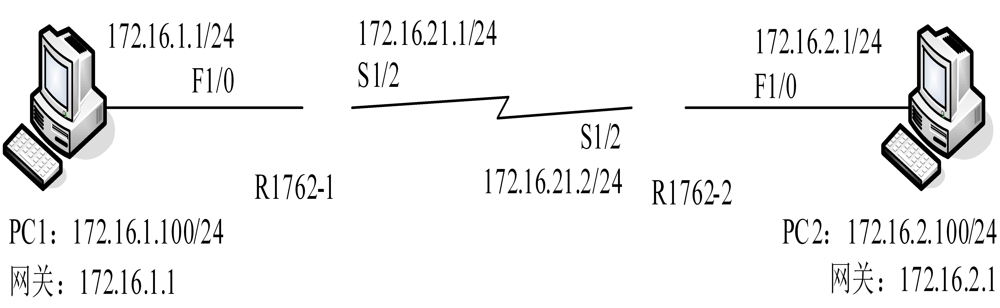
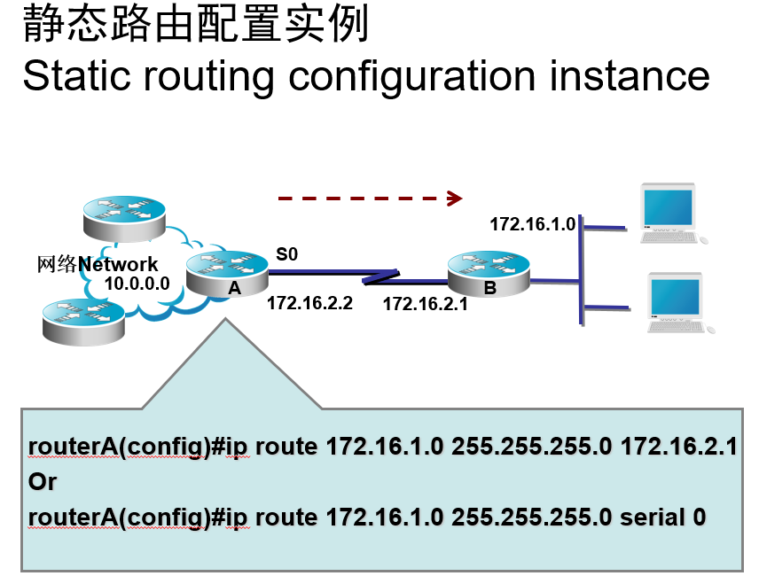
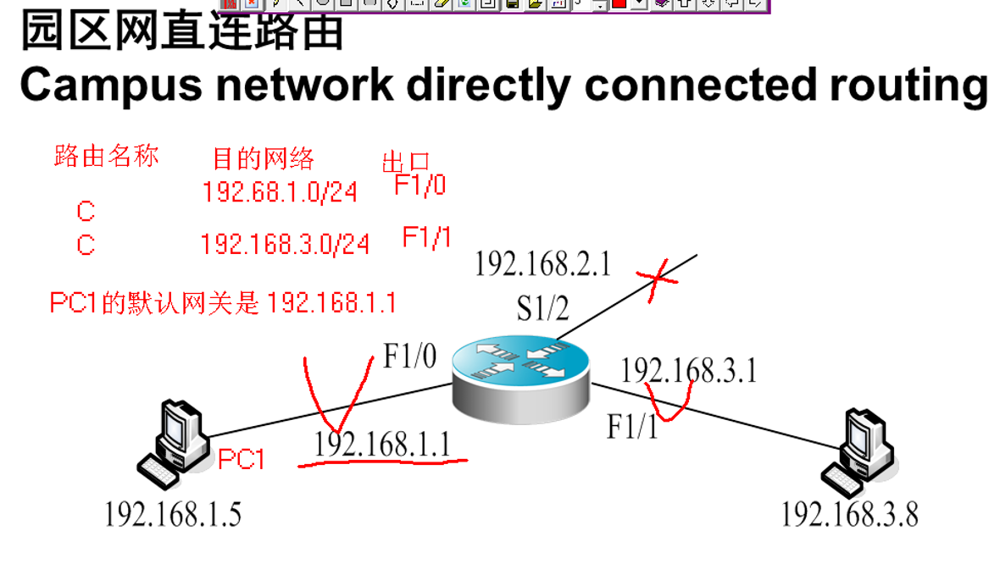

复习大纲 — 简答题答案 / Review Outline — Short Answer Questions¶
用户：Carpe diem
说明：答案优先从PPT原文提取并整理；PPT中缺失的内容已通过补充知识完善。
（已真人按照qq群视频逐题增删查改）
Q1：什么是动态路由？ / What is dynamic routing?¶
答案来源：4-构建园区网络双语...
动态路由协议（Routing Protocol）用于路由器动态寻找网络最佳路径，保证所有路由器拥有相同的路由表，一般路由协议决定数据包在网络上的行走路径，这类协议的例子有OSPF，RIP等路由协议。路由选择协议消息在路由器之间传送，允许路由器与其他路由器通信，生成、更新和维护路由选择表。
Q2：什么设备可以产生路由表？ / What devices can generate routing tables?¶
答案来源：PPT原文 + 整理补充
- 路由器是产生和维护路由表的主要设备
- 三层交换机开启路由功能（ip routing）后也可产生路由表
Q3：最早开发以太网的公司是哪个？ / Which company first developed Ethernet?¶
答案来源：PPT原文 + 补充知识
- 以太网最早由施乐公司（Xerox）在20世纪70年代开发
Q4：本征帧的概念，一般本征帧在哪个VLAN，本征帧的协议标准是哪个？ / What is the concept of native frames, which VLAN are they generally in, and what is the protocol standard?¶
答案来源：PPT原文 + 整理补充
- 本征帧（Native VLAN）：在Trunk链路上，不需要打4字节802.1Q标签就可以直接传输的帧
- 默认Native VLAN：每个Trunk口的缺省Native VLAN是VLAN 1
- 协议标准：IEEE 802.1Q
Q5：配置静态路由的一般步骤是什么？ / What are the general steps for configuring static routing?¶
答案来源：4-构建园区网络双语...
- 为路由器每个接口配置IP地址
- 确定本路由器有哪些直连网段的路由信息
- 确定网络中有哪些属于本路由器的非直连网段
- 添加本路由器的非直连网段相关的路由信息
Q6：什么是RIP协议，收敛时间是多少，跳数限制是多少？ / What is the RIP protocol, what is its convergence time, and what is the hop count limit?¶
答案来源：4-构建园区网络双语...
路由信息协议RIP；
假定如果从网络的一个终端到另一个终端的路由跳数超过15个，那么一定牵涉到了循环，
因此当一个路径达到16跳，将被认为是达不到的。
补充：RIP收敛速度较慢（240秒以上），路由更新周期30秒，180秒未收到更新即标记不可达，240秒后删除路由。
Q7：理解SVI、TAGVLAN、RIP、OSPF的含义 / Understand the meanings of SVI, TAGVLAN, RIP, and OSPF¶
答案来源：PPT原文 + 整理补充
- SVI（Switch Virtual Interface，交换机虚拟接口）：为交换机中VLAN创建的虚拟三层接口，可配置IP地址作为该VLAN的网关，实现VLAN间路由
- TAG VLAN（标签VLAN）：基于IEEE 802.1Q标准，在以太网帧中插入4字节VLAN标签（Tag），包含12位VLAN ID（支持4096个VLAN）、3位优先级、1位格式指示符。Trunk端口传输多VLAN数据时给帧打标签
- RIP（Routing Information Protocol，路由信息协议）：距离矢量路由协议，以跳数作为度量值，最大15跳（16跳不可达），每隔30秒更新，适用于小型网络
- OSPF（Open Shortest Path First，开放最短路径优先）：链路状态路由协议，克服了RIP收敛慢（240秒以上）和15跳规模限制的弱点，采用区域概念（骨干区域Area 0），由RFC 2328定义
Q8：记住所有的私有地址 / Remember all private addresses¶
答案来源：PPT原文 + 补充知识（RFC 1918）
私有IP地址范围（RFC 1918定义）：
- A类：10.0.0.0 ~ 10.255.255.255
- B类：172.16.0.0 ~ 172.31.255.255
- C类：192.168.0.0 ~ 192.168.255.255
这些地址只能在局域网内部使用，不能直接在Internet上路由。
Q9：交换机和路由器的各种操作模式及提示符号 / Various operation modes and prompt symbols for switches and routers¶
答案来源：3-使用子网技术，实现网络连通双语...
用户模式提示符为switch> 路由器>
特权模式提示符为switch# 路由器#
全局配置模式 switch(config)#
端口模式 switch(config-if)#
Q10：综合理解RIP和OSPF / Comprehensive understanding of RIP and OSPF¶
答案来源：PPT原文 + 整理补充
RIP（路由信息协议）：
- 距离矢量路由协议，Xerox在70年代开发
- 以跳数为度量，最大15跳，16跳不可达
- 每30秒发送更新报文，180秒未收到→标记不可达，240秒→删除路由
- 适用于小型同类网络，配置简单但收敛慢
OSPF（开放最短路径优先）：
- 链路状态路由协议，克服了RIP收敛慢和规模限制
- 采用分区域概念：骨干区域Area 0 + 非骨干区域
- 基于SPF算法计算最短路径，收敛速度快
- RFC 2328定义，适用于中大型网络
Q11：RIP v1和RIP v2的区别 / Differences between RIPv1 and RIPv2¶
答案来源：4-构建园区网络双语...
RIPv1
● 有类路由协议,不支持VLSM
● 以广播的形式发送更新报文
● 不支持认证
RIPv2
● 无类路由协议,支持VLSM
● 以组播的形式发送更新报文
● 支持明文和MD5的认证
Q12：RIP路由信息的更新过程 （流言蜚语协议） / RIP routing information update process (rumor protocol)¶
答案来源：4-构建园区网络双语...
RIP路由信息的更新 2、如果路由器经过180秒没有收到来自某一路由器的路由更新报文，则将所有来自此路由器的路由信息标志为不可达。 3、若在其后240秒内仍未收到更新报文，就将这些路由从路由表中删除
补充：第1步 — RIP协议每隔30秒定期向外发送一次更新报文。
Q13：不同VLAN之间可以通过什么进行通信？交换机和路由器的管理模式有几种，分别是什么（二者的管理模式一样） / How can different VLANs communicate? How many management modes do switches and routers have, and what are they? (Both have the same management modes)¶
答案来源：2-扩展办公网络，提供网络带宽双语...
不同 VLAN 之间通过三层路由技术（单臂路由或三层交换）通信；三层交换机 / 路由器常见工作模式有单臂路由模式、三层 SVI 模式、路由接口模式、多物理接口路由模式
Q14：内部连通性测试命令有哪些，怎么用？ / What are the internal connectivity test commands and how to use them?¶
答案来源：PPT原文 + 补充知识
常用连通性测试命令：
- ping：使用ICMP协议发送回显请求，测试网络连通性和延迟
- 用法：ping 目标IP地址（Windows默认4次，Cisco持续发送）
- ipconfig：查看本机网卡IP、子网掩码、网关、DNS等网络配置信息
- 用法：ipconfig（简略查看）；ipconfig /all（完整查看MAC、DHCP、DNS详情）；ipconfig /release /renew（释放、重新获取DHCP地址）
Q15：能配置静态路由，知道什么是默认路由，配置默认路由，默认路由就是特殊的静态路由，能给VLAN和路由器端口分配地址 / Configure static routes, understand default routes, configure default routes (default routes are special static routes), assign addresses to VLANs and router ports¶
答案来源：4-构建园区网络双语...
- 静态路由是在路由器中设置的固定路由表。除非网络管理员干预，否则静态路由不会发生变化。由于静态路由不能对网络的改变作出反映，一般用于网络规模不大、拓扑结构固定的网络中。静态路由是指由网络管理员手工配置的路由信息（参考下图，会配置）
- 静态路由配置命令
- Static route configuration commands
- 配置静态路由用命令ip route
- Commands to configure static routes: ip route
- router(config)#ip route [网络编号] [子网掩码] [转发路由器的IP地址/本地接口]
- router(config)#ip route [Network number] [subnet mask] [IP address of forwarding router/local interface]
- example：ip route 192.168.10.0 255.255.255.0 serial 0
- 静态路由描述转发路径的方式有两种
- There are two ways in which static routes describe forwarding paths
- 指向本地接口（即从本地某接口发出）
- Points to a local interface (i.e., from a local interface)
- 指向下一跳路由器直连接口的IP地址（即将数据包交给X.X.X.X）
- The IP address that points to the direct connection port of the next router (that is, deliver the packet to X.X.X.X)


Q16：启用RIP和OSPF的命令 / Commands to enable RIP and OSPF¶
答案来源：4-构建园区网络双语...
1、开启RIP路由协议进程(Start RIP routing protocol process)
Router(config)#router rip
2、申请本路由器参与RIP协议的直连网段信息(Request the information of direct network segment of this router to participate in RIP protocol)
Router(config-router)#network 192.168.1.0
3、指定RIP协议的版本2(默认是version1)(Specifies version 2 of the RIP protocol (default version1).)
Router(config-router)#version 2
4、在RIPv2版本中关闭自动汇总(Turn off automatic summarization in RIPv2 versions)
Router(config-router)#no auto-summary
OSPF
创建一个OSPF路由进程
Create an OSPF routing process
Router(config)#router ospf 1
定义关联的IP地址范围
Defines the associated IP address range
Router(config-router)#network 192.168.0.0 0.0.255.255 area 0
Q17：掌握直连路由概念，会写直连路由，知道默认网关 / Master the concept of direct routing, know how to write direct routes, and understand default gateways¶
答案来源：4-构建园区网络双语...
园区网直连路由；直连路由 directly connected routing；直连路由是在配置完路由器网络接口的 一般把在路由器接口所连接的子网，直接配置地址的路由方式称为直连路由，直连路由基本功能就是实现邻居的互通。 (参考下图)

Q18：掌握跨交换机实现同种和不同种VLAN通信的配制方法的实验，掌握直连路由和静态路由实验（只要求能写在某种模式下去配置，连线测试和最后的验证不用写） / Master the experiments of cross-switch same and different VLAN communication configuration, master direct routing and static routing experiments (only need to write the configuration in certain modes, wiring test and final verification not required)¶
答案来源：1-优化办公网络，降低网络干扰双语...
在交换机之间用一条级联线，并将对应的端口设置为；Trunk端口传输多个；跨交换机 （实验不会，听不懂）
Q19：每个实验的命令配置过程必须会写 / Must know how to write the command configuration process for each experiment¶
答案来源：1-优化办公网络，降低网络干扰双语...
将一组接口加入某一个VLAN Switch(config)#interface range fastethernet 0/1-10，0/15，0/20 Switch(config-if-range)#switchport access vlan 20 Switch(config-if-range)#no shutdown；注：连续接口 0/1-10，中间使用空格分离; 不连续多个接口，中间用逗号隔开；；如果使用模块，一定要写明模块编号。 （不会，听不懂）
Q20：配置TAGVLAN时，对端口有什么要求？（端口要配置成 TRUNK形式，命令是什么？） / What are the port requirements when configuring TAGVLAN? (The port needs to be configured as TRUNK, what is the command?)¶
答案来源：1-优化办公网络，降低网络干扰双语...
每个Trunk口，都属于一个native VLAN ；
Each Trunk port belongs to a native VLAN.
每个Trunk口，缺省native VLAN是VLAN 1；
For each Trunk port, the default native VLAN is VLAN 1;
在配置Trunk链路时，确保Trunk口链路两端属于相同的native VLAN；
When configuring the Trunk link, ensure that both ends of the Trunk port link belong to the same native VLAN
Switch(config)# interface fastethernet0/1
Switch(config)# switchport mode trunk
Switch(config-if)# switchport trunk native vlan 20
Switch(config-if)# no shutdown
Switch(config-if)# end
Q21：路由器端口地址的配置原则是什么？ / What are the configuration principles for router port addresses?¶
答案来源：3-使用子网技术，实现网络连通双语...
路由器的物理网络端口需要有一个IP地址
The physical network port of the router needs to have an IP address
相邻路由器的相邻端口IP地址在同一网段
Adjacent port IP addresses of adjacent routers are in the same network segment
同一路由器不同端口在不同网段上
The same router has different ports on different network segments
Q22：好好掌握每个实验的技术原理部分，思考题和书写的过程（主要是创建VLAN，能把一个或多个端口分配给VLAN。能配置端口的IP地址，启用RIP和OSPF路由PPT,实验内容及说明 / Master the technical principles of each experiment, reflection questions, and writing process (mainly creating VLANs, assigning one or more ports to VLANs, configuring port IP addresses, enabling RIP and OSPF routing)¶
答案来源：2-扩展办公网络，提供网络带宽双语...
（实验不会）
Q23：NAT的端口应用原理 / NAT port application principle¶
答案来源：PPT原文 + 整理补充
PAT（Port Address Translation，端口地址转换/端口复用）：
- PAT是复用NAT池的特例，通过端口复用技术用一个合法IP地址映射内网所有私有IP地址
- 这个合法地址往往就是路由器出口的IP地址（如S0/0口IP）
- 工作原理：将内网多个私有IP地址和端口号映射到同一个公网IP地址的不同端口号上
- 理论上一个IP地址可映射约65000个会话，实际路由器通常支持约4000个（Cisco）
PAT配置方法一（建立NAT池，起始=结束）：
R1(config)# ip nat pool 池名 起始地址 结束地址 netmask 子网掩码 R1(config)# access-list 表号 permit 内部地址条件 R1(config)# ip nat inside source list 表号 pool 池名 overload
PAT配置方法二（不建立NAT池，直接使用出口接口）：
R1(config)# access-list 30 permit 10.0.0.0 0.255.255.255 R1(config)# ip nat inside source list 30 interface s0/0 overload
- 优点：最大限度节省IP地址
- 缺点：只能同时支持几千个会话，易造成拥塞；缓解方法：多申请IP地址建大NAT池、限制占用会话数多的应用（如BT） （参考deepseek）
Q24：NAT边界路由配置应注意什么？ / What should be noted in NAT border router configuration?¶
答案来源：6网络地址转换NAT讲课...
局域网和ISP的网络一般应看作为两个自治系统，所以两者之间不能通过RIP等协议学习路由。
LAN and ISP should be regarded as two autonomous systems, so they can not learn routing through RIP.
在NAT路由器和与它相连的路由器间一般通过静态路由或默认路由实现两边网络的连通。
The connection between NAT router and its connected router is usually realized by static route or default route.
NAT路由器一般配置通往外网的默认路由。
NAT routers are typically configured with default routes to the public network.
ISP的路由器通过配置静态路由为局域网分配IP地址段。
The ISP's router assigns IP address segments to the LAN by configuring static routing.
Q25：网络系统集成的特点是什么？ / What are the characteristics of network system integration?¶
答案来源：网络工程设计CH1...
网络系统集成的特点；
接口规范；关注系统整体性能；重视工程规范和质量管理；建立良好的用户关系
Q26：现在使用的IP地址是有类地址还是无类地址？IP地址/子网地址/园区网的层次结构 / Are current IP addresses classful or classless? IP address/subnet address/campus network hierarchical structure¶
答案来源：2-扩展办公网络，提供网络带宽双语...
无类
在组建大中型以太网络之前，需要连接很多的交换机、路由器等网络互联设备。大中型以太网络在规划和设计中，普遍采用三层结构模型，以明确每一台设备在以太网中所承担的基本功能，以太网络在规划和设计中三层结构模型，按照网络的功能，将网络首先从逻辑结构上，划分为三个层次，即核心层、汇聚层和接入层。 层次化网络规划设计 （网络工程概述思维导图找，上文内容仅供参考）
Q27：私有地址/广播地址 / Private addresses / Broadcast addresses¶
答案来源：PPT原文 + 补充知识
私有地址（RFC 1918定义，只能在局域网内部使用，不能直接在Internet上路由）：
- A类：10.0.0.0 ~ 10.255.255.255（10.0.0.0/8）
- B类：172.16.0.0 ~ 172.31.255.255（172.16.0.0/12）
- C类：192.168.0.0 ~ 192.168.255.255（192.168.0.0/16）
广播地址：
- 子网广播地址（直接广播）：子网中主机位全为1的地址，用于向该子网内所有主机发送数据。如192.168.1.0/24的广播地址为192.168.1.255
- 有限广播地址：255.255.255.255，用于本地网络广播，路由器默认不会转发（隔离广播域）
- 广播域：网络中能接收同一广播帧的所有节点的集合。VLAN技术可分割广播域，控制广播风暴
- NAT边界路由器需处理私有地址与公网地址的转换，私有地址在公网上不可路由
Q28：路由器和交换机的模式符号，路由表缩写C S R O的含义 / Router and switch mode symbols, meanings of routing table abbreviations C, S, R, O¶
答案来源：4-构建园区网络双语...
| 模式 | 交换机提示符 | 路由器提示符 |
|---|---|---|
| 用户模式 | Switch> | Router> |
| 特权模式 | Switch# | Router# |
| 全局配置模式 | Switch(config)# | Router(config)# |
| 接口配置模式 | Switch(config-if)# | Router(config-if)# |
| VLAN 配置模式 | Switch(config-vlan)# | 路由器三层可使用 |
| 路由协议模式 | 无 | Router(config-router)# |
补充：路由表中 C=直连路由(Connected)、S=静态路由(Static)、R=RIP、O=OSPF。
Q29：三层交换机默认工作在第几层？ / Which layer does a Layer 3 switch work at by default?¶
答案来源：PPT原文 + 补充知识
- 三层交换机默认工作在第二层（数据链路层）
- 三层交换机本质是"二层交换机 + 路由模块"，数据转发优先使用硬件交换（二层）
- 只有开启路由功能（ip routing）后，才能进行三层路由转发
- 三层交换机用于核心层/汇聚层，连接所有区域的核心设备
Q30：举例：三层交换机名称A，写出在此交换机上创建VLAN40，VLAN80，并给VLAN40配置地址172.16.20.2，VLAN80配置地址172.16.30.1，最后把端口F0/24分配给VLAN20的命令。 / Example: Layer 3 switch named A, write the commands to create VLAN40 and VLAN80, assign address 172.16.20.2 to VLAN40 and 172.16.30.1 to VLAN80, and assign port F0/24 to VLAN20.¶
答案来源：2-扩展办公网络，提供网络带宽双语...
-
进入特权模式与全局配置模式： enable configure terminal
-
创建 VLAN40、VLAN80： vlan 40 exit vlan 80 exit
-
配置 VLAN40 三层虚拟接口 IP： interface vlan 40 ip address 172.16.20.2 255.255.255.0 no shutdown exit
-
配置 VLAN80 三层虚拟接口 IP： interface vlan 80 ip address 172.16.30.1 255.255.255.0 no shutdown exit
-
创建 VLAN20，将 F0/24 端口设为接入端口并划分至 VLAN20： vlan 20 exit interface fastEthernet 0/24 switch mode access switch access vlan 20
-
保存配置：write
Q31：举例，直连路由及默认网关 / Example: direct routing and default gateway¶
答案来源：4-构建园区网络双语...
1. 直连路由例子
路由器接口 G0/0 配置 IP 192.168.1.1 255.255.255.0，开启接口后，路由表自动生成直连路由：
C 192.168.1.0/24 直连GigabitEthernet0/0
特点：无需手动添加，接口 UP 自动生成，只能转发直连网段流量。
2. 默认网关例子
局域网 PC 地址 192.168.1.10，三层网关地址 192.168.1.1；PC 填写默认网关 192.168.1.1。
当 PC 访问外网（如 223.5.5.5），本地路由无匹配条目，数据包转发给默认网关处理。
Q32：两台交换机配置为初始状态，交换机A、B的F0/10接vlan 10的PC；F0/20接vlan 20的PC； A的F0/24接交换机B的F0/24，要求实现两台交换机之间的Vlan ID相同的PC可以互通。写出交换机A和B的配置过程 / Two switches are in initial state. Switch A and B have F0/10 connected to VLAN 10 PCs, F0/20 connected to VLAN 20 PCs, and A's F0/24 connected to B's F0/24. Enable communication between PCs with the same VLAN ID across the two switches. Write the configuration process.¶
答案来源：1-优化办公网络，降低网络干扰双语...
交换机 A 配置步骤
进入全局配置： enable → configure terminal
创建 VLAN： vlan 10 exit vlan 20 exit
配置接入端口 f0/10： interface f0/10 switch mode access switch access vlan 10 exit
配置接入端口 f0/20： interface f0/20 switch mode access switch access vlan 20 exit
互联端口 f0/24 配置 Trunk： interface f0/24 switch mode trunk switch trunk allowed vlan all
保存：end、write
交换机 B 配置步骤
与交换机 A 操作命令完全相同，重复上述全部命令即可。
Q33：配置静态路由连通网络 / Configure static routing to connect networks¶
答案来源：4-构建园区网络双语...
拓扑：R1 与 R2 通过 G0/0 直连，互联网段 10.1.1.0/24；R1 内网 192.168.10.0/24，G0/0 地址 10.1.1.1；R2 内网 192.168.20.0/24，G0/0 地址 10.1.1.2。
一、路由器 R1 配置
Router>enable
Router#configure terminal
Router(config)#interface GigabitEthernet 0/0
Router(config-if)#ip address 10.1.1.1 255.255.255.0
Router(config-if)#no shutdown
Router(config-if)#exit
Router(config)#ip route 192.168.20.0 255.255.255.0 10.1.1.2
Router(config)#end
Router#write
二、路由器 R2 配置
Router>enable
Router#configure terminal
Router(config)#interface GigabitEthernet 0/0
Router(config-if)#ip address 10.1.1.2 255.255.255.0
Router(config-if)#no shutdown
Router(config-if)#exit
Router(config)#ip route 192.168.10.0 255.255.255.0 10.1.1.1
Router(config)#end
Router#write
三、验证
使用 show ip route 查看路由表，S 代表静态路由；
在 R1 执行 ping 192.168.20.1，能收到回复代表网络连通。
Q34：综合实验（实验15） / Comprehensive experiment (Experiment 15)¶
答案来源：实验报告
15.5.1 、SWITCH1划分两个VLAN，VLAN10、VLAN20,其中F0/1-5属于VLAN10,F0/6-10属于VLAN20。创建链路聚合，将23,24端口设置为链路聚合端口。（注意配置链路聚合时，先链接一根线缆，等配置完后再连第二根线缆，如果不通可先在三层上创建一个VLAN，逐步调通）
15.5.1 、SWITCH1 divides two VLans, VLAN10 and VLAN20, where F0/1-5 belongs to VLAN10 and F0/6-10 belongs to VLAN20. Link aggregation is created and ports 23,24 are set as link aggregation ports.
SWITCH1#conf t
SWITCH1(config)#vlan 10
SWITCH1(config-vlan)#exit
SWITCH1(config)#vlan 20
SWITCH1(config-vlan)#exit
SWITCH1(config)#int range fastEthernet 0/1-5 进入1-5端口接口模式
SWITCH1(config-if-range)#switchport access vlan 10 1-5端口分配给vlan10
SWITCH1(config-if-range)#no shutdown
SWITCH1(config-if-range)#exit
SWITCH1(config)#int range f0/6-10
SWITCH1(config-if-range)#switchport access vlan 20
SWITCH1(config-if-range)#no shutdown
SWITCH1(config-if-range)#exit
SWITCH1 (config) # interface port-channel 1 (聚合通道1)
SWITCH1 (config)#exit
SWITCH1# int range fa0/23,fa0/24
SWITCH1 (config-if-range)# channel-group 1 mode on
SWITCH1 (config-if-range)# exit
SWITCH1 (config)#int port-channel 1
SWITCH1 (config-if)# switchport mode trunk
SWITCH1 (config-if)#end
SWITCH1#Show vlan
15.5.2、SWITCH2划分两个VLAN，VLAN10、VLAN30,其中F0/1-5属于VLAN10,F0/6-10属于VLAN30。端口22做成Tagvlan，trunk。
15.5.2、SWITCH2 divides two VLans, VLAN10 and VLAN30, where F0/1-5 belongs to VLAN10 and F0/6-10 belongs to VLAN30. Port 22 made Tagvlan, trun
SWITCH2#conf t
SWITCH2(config)#vlan 10
SWITCH2(config-vlan)#exit
SWITCH2(config)#vlan 30
SWITCH2(config-vlan)#exit
SWITCH2(config)#int range fastEthernet 0/1-5
SWITCH2(config-if-range)#switchport access vlan 10
SWITCH2(config-if-range)#no shutdown
SWITCH2(config-if-range)#exit
SWITCH2(config)#int range f0/6-10
SWITCH2(config-if-range)#switchport access vlan 30
SWITCH2(config-if-range)#no shutdown
SWITCH2(config-if-range)#exit
SWITCH2(config)#int f 0/22
SWITCH2(config-if)#switchport mode trunk
SWITCH2(config-if)#no shutdown
SWITCH2(config-if)#end
SWITCH2#Show vlan
15.5.3 、核心交换机的配置（创建VLAN10、vlan20、vlan30，并分别按照拓扑标识分配地址，创建链路聚合端口，将端口23和24做成聚合端口（聚合端口可以不做，自适应），将22端口做成trunk端口。用相关show命令查看
15.5.3 、For the configuration of the core switch, create VLAN10, vlan20 and vlan30, assign addresses according to the topology identification respectively, create link aggregation ports, make ports 23 and 24 as aggregation ports (the aggregation port can not be done, adaptive), and make port 22 as trunk port. View it with the relevant s
switch3#conf t
switch3(config)#vlan 10 创建vlan10
switch3(config-vlan)#ex
switch3(config)#vlan 20
switch3(config-vlan)#ex
switch3(config)#vlan 30
switch3(config-vlan)#ex
switch3(config)#int vlan 10 进入vlan10模式
switch3(config-if)#ip address 192.168.10.1 255.255.255.0 配置IP地址（SVI）
switch3(config-if)#ex
switch3(config-if)#int vlan 20
switch3(config-if)#ip address 192.168.20.1 255.255.255.0
switch3(config-if)#exit
switch3(config)#int vlan 30
switch3(config-if)#ip address 192.168.30.1 255.255.255.0
switch3(config-if)#exit
switch3#Show ip interface brief
此时配置完成后，看看PC2和PC0能否ping通，如果不通，把链路聚合的线缆去掉重新再连即可。一定要通才行。
15.5.4 、局域网内部三层交换机和路由器间利用RIPv2实现全网互通，路由器连外网配置缺省路由。（应该不会考这个吧，这么长）
15.5.4 、RIPv2 is used to realize the interconnection between the layer 3 switches and routers in the local area network, and the default routing is configured for the routers.
1、外网路由器ISP(R1)的配置（按照拓扑图提示，给R1的连接端口配置IP地址，用相关show命令查看）
1、Configuration of external router ISP(R1) (Configure the IP address of the connection port of R1 according to the prompts in the topology diagram, and use the relevant show command to view)
ROUTER1#conf t
ROUTER1(config)#int f0/0 进入端口f0/0-
ROUTER1(config-if)#ip address 170.170.170.1 255.255.255.0 配置IP地址（默认网关）
ROUTER1(config-if)#no shutdown
ROUTER1(config-if)#exit
ROUTER1(config)#int s0/1/0
ROUTER1(config-if)#ip address 202.206.64.2 255.255.255.0
ROUTER1(config-if)#no shutdown
ROUTER1(config-if)#exit
ROUTER1#Show ip route 查看路由信息
2．局域网三层交换机(启用端口f0/10的三层功能，并配置IP地址，启用路由协议RIP2，发布直连网络，设置交换机到局域网路由器的默认路由，用相关show命令查看)
2、LAN Layer 3 switch (Enable layer 3 function of port f0/10, configure IP address, enable routing protocol RIP2, publish direct network, set default routing from switch to LAN router, use relevant show command to view)
switch3(config)#int f0/10 进入f0/10端口模式
switch3(config-if)#no switchport 关闭二层端口功能
switch3(config-if)#ip address 192.168.1.2 255.255.255.0 配置IP地址（相当于路由器端口）
switch3(config-if)#no shut
switch3(config-if)#exit
switch3 (config)#ip routing
switch3(config)#router rip 启用RIP协议
switch3(config-router)#version 2 调用版本2协议
switch3(config-router)#network 192.168.1.0 发布所有直连网络
switch3(config-router)#network 192.168.10.0
switch3(config-router)#network 192.168.20.0
switch3(config-router)#network 192.168.30.0
switch3(config-router)#exit
switch3(config)#ip route 0.0.0.0 0.0.0.0 192.168.1.1 配置默认路由
switch3#exit
switch3#show ip route
3、局域网路由器R0（lan-router）（参照拓扑图给R0连接端口配置IP地址。启用RIP2协议，发布直连网络，配置局域网路由器到因特网路由器（R1）的默认路由。配置好后，用相关show命令查看）
3、lan router R0 (Refer to the topology map to configure the IP address of the R0 connection port. Enable RIP2 protocol, publish direct network, and configure the default route from LAN router to Internet router (R1). Once configured, view it with the relevant show command.)
ROUTER0#conf t
ROUTER0(config)#int f0/0
ROUTER0(config-if)#ip address 192.168.1.1 255.255.255.0
ROUTER0(config-if)#no shutdown
ROUTER0(config-if)#exit
ROUTER0(config)#int s0/1/0
ROUTER0(config-if)#ip address 202.206.64.1 255.255.255.0
ROUTER0(config-if)#no shutdown
ROUTER0(config-if)#exit
ROUTER0(config)#router rip
ROUTER0(config)#version 2
ROUTER0(config-router)#network 192.168.1.0
ROUTER0(config-router)#network 202.206.64.0
ROUTER0(config-router)#exit
ROUTER0(config)#ip route 0.0.0.0 0.0.0.0 s0/1/0
ROUTER0(config)#end
ROUTER0#show ip route
配置无误后：测试：
此时VLAN10、VLAN20、VLAN30的站点都能互相ping通，到内网路由器的所有地址都能ping通，但是访问外网路由器的WWWserver不能访问，也不能ping通170.170.170.2；
外网路由器R1做如下配置：（启用RIP2，发布直连路由，用相关show命令查看）
ROUTER1#con t
ROUTER1(config)#Router rip
ROUTER1(config-router)#Version 2
ROUTER1(config-router)#Network 170.170.170.0
ROUTER1(config-router)#Network 202.206.64.0
ROUTER1(config-router)#end
ROUTER1#Show ip route
此时用任何一个VLAN的站点，访问WWWserver都能通
再做如下配置：（停用RIP2协议）
此时，又恢复到刚才的配置，此时各站点访问WWWserver不通
15.5.5、配置动态NAPT实现局域网访问互联网
（对局域网路由器R0，指定内外网接口，配置内网转外网络地址转换池，名字为to_internet，内网所有的地址转换成一个外网地址202.206.64.1，允许VLAN10、VLAN20、VLAN30和f0/10端口所在的网络使用，用端口转换。）
（For LAN router R0, specify the internal and external network interface, configure the internal network to external network address translation pool, the name is to_internet, all the internal network address translation into an external network address ）
ROUTER0#conf t
ROUTER0(config)#int f0/0
ROUTER0(config-if)#ip nat inside 设置内网端口
ROUTER0(config-if)#exit
ROUTER0(config)#int s0/1/0
ROUTER0(config-if)#ip nat outside 设置外网端口
ROUTER0(config-if)#exit
ROUTER0(config)#ip nat pool to_internet 202.206.64.1 202.206.64.1 netmask 255.255.255.0 定义内部全局地址池
ROUTER0(config)#access-list 10 permit 192.168.1.0 0.0.0.255 定义允许转换的地址
ROUTER0(config)#access-list 10 permit 192.168.10.0 0.0.0.255
ROUTER0(config)#access-list 10 permit 192.168.20.0 0.0.0.255
ROUTER0(config)#access-list 10 permit 192.168.30.0 0.0.0.255
ROUTER0(config)#ip nat inside source list 10 pool to_internet overload 为内部本地调用转换地址池，端口调用
ROUTER0(config)#end
配置完后，用下面命令：
ROUTER0#Show ip nat translations 查看NAPT的动态映射表
此时没有任何地址匹配项，记录结果
用其中一台电脑访问WWWserver（170.170.170.2），如果能访问，再
ROUTER0#Show ip nat translation
看看有什么变化，然后用别的机器访问WWWserver
再
ROUTER0#Show ip nat translation
再看变化，，为什么？时间不要相隔太久，太久又有什么变化？（此配置下，所有主机都能访问WWW服务器。）
15.5.6、VLAN30的主机不可以访问VLAN20的主机。
（用扩展的访问列表，名字为deny30to20，协议类型是ip协议）
15.5.6、Hosts from VLAN30 cannot access hosts from VLAN20.
(Use extended access list, name is deny30to20, protocol type is ip protocol)
switch3(config)#ip access-list extended deny30to20 定义名字为deny30to20的命名访问控制列表
switch3(config-ext-nacl)#deny ip 192.168.30.0 0.0.0.255 192.168.20.0 0.0.0.255 禁止源地址为192.168.30.0/24到目标地址192.168.20.0/24的访问服务
switch3(config-ext-nacl)#permit ip any any 允许其他的访问服务
switch3(config-ext-nacl)#exit
switch3(config)#int vlan 20
switch3(config-if)#ip access-group deny30to20 out 把扩展的访问列表在vlan20出口应用
switch3#Show ip access-lists
记录结果
配置完后测试，用VLAN30的主机ping VLAN20的主机，不通，但是其它的主机pingVLAN20的主机没问题，VLAN20的主机pingVLAN30的主机也是不通的。
15.5.7、VLAN30的主机不可以访问外网的wwwServer
用扩展的访问控制列表实现，名字deny30www，
15.5.7、The host of VLAN30 can not access the outer net wwwServer
Implemented with an extended access control list, named deny30www,
switch3(config)#ip access-list extended deny30www
switch3(config-ext-nacl)#deny tcp 192.168.30.0 0.0.0.255 170.170.170.0 0.0.0.255 eq www 禁止基于TCP协议，源端口192.168.30.0/24到170.170.170.0/24的WWW服务的访问
switch3(config-ext-nacl)#permit ip any any 允许其他的访问
switch3(config-ext-nacl)#exit
switch3(config)#int vlan 30
switch3(config-if)#ip access-group deny30www in 在端口上应用，入栈应用
switch3(config-if)#end
switch3#Show ip access-lists
测试：
此时除了vlan30的主机之外，都能访问WWWserver